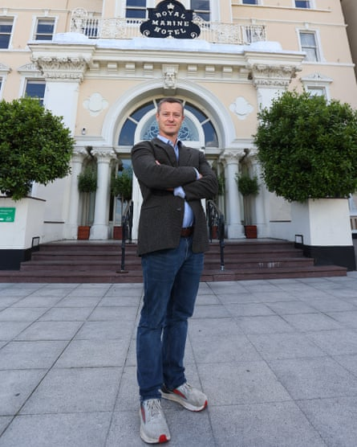

I f Adam Dorr is correct, robots and artificial intelligence will dominate the global economy within a generation and put virtually the entire human race out of a job. The social scientist doubles up as a futurist and has a stark vision of the scale, speed and unstoppability of a technological transformation that he says will replace virtually all human labour within 20 years.
Dorr heads a team of researchers who have studied patterns of technological change over millennia and concluded that the current wave will not just convulse but obliterate the labour market by 2045. What cars did to horses and carts, and electricity to gas lamps, and digital cameras to Kodak, are templates for the coming shock, he says. “Technology has a new target in its crosshairs – and that’s us. That’s our labour.”
Whatever you do in whatever sector, within a generation machines will be able to perform the same task just as well, if not better, and for a fraction of the cost, says Dorr. “Costs are improving consistently, capabilities are improving consistently. We’ve seen that pattern before. If I can get the same thing or better for the same or lower cost, switching is a no-brainer. We’re the horses, we’re the film cameras.”
Adam Dorr: ‘We’re the horses, we’re the film cameras.’Photograph: Andrew Watchorn Photography
Dorr, 48, is a technology theorist with a PhD in public affairs from the University of California, Los Angeles, and is the director of research at RethinkX , a US-registered nonprofit that analyses and forecasts technological disruption. It was founded and is largely funded by James Arbib and Tony Seba, technology entrepreneurs and investors.
Dorr spoke to the Guardian on a visit to Ireland, where he addressed the Dargan Forum , a two-day gathering in Dún Laoghaire, south Dublin, that focused on green and digital transitions.
Dorr combined an ominous prediction – humanoid robots powered by increasingly capable artificial intelligence will spread across virtually every industry, leaving humans unable to compete – with a jarring blast of optimism: handled well, this revolution will usher in “super-abundance” that will liberate humanity. But handled badly, new extremes of inequality and oligarchy beckon.
The transition will be faster than most people think, says Dorr. “We’ve documented 1,500-plus technological transformations across all of human history. Through the theoretical lens that we’ve developed, a consistent set of patterns emerge over and over and over again.”
Once a new technology captures just a few percentage points of “mind share or market share”, it tends to acquire overwhelming dominance within 15 to 20 years, which according to Dorr, means robots and AI will soon make human labour all but obsolete.
“Machines that can think are here, and their capabilities are expanding day by day with no end in sight. We don’t have that long to get ready for this. We know it’s going to be tumultuous.”
Some sectors will have an interregnum during which humans can work effectively alongside robots – just like the period when chess grandmasters teamed up with chess programs – but sooner rather than later humans will just be in the way, says Dorr.
Jobs whose value depend on human input – such as sports coaches, politicians, sex workers, ethicists – will endure but even they will face competition from machines. “There will remain a niche for human labour in some domains. The problem is that there are nowhere near enough of those occupations to employ 4 billion people.”
Venerable institutions and practices may no longer be fit for purpose, so societies need to urgently prepare by devising a set of guiding principles and re-evaluating concepts such as value, price and distribution, says Dorr. “I don’t have the answers. We don’t even know if we have the right questions. We need to experiment now and try out new ownership structures, new stakeholder structures.”
Adam Dorr at the Royal Marine hotel in Dún Laoghaire, Dublin.Photograph: Andrew Watchorn Photography
He has written a book, Brighter: Optimism, Progress and the Future of Environmentalism , that is a paean to clean energy and hope. He acknowledges the perils of economic dislocation, populist backlash and misinformation but says that is not inevitable. Gains in productivity and abundance will be vast and distribution – for instance, by emulating the example open source software – could be fair. “This could be one of the most amazing things to ever happen to humanity.”
Previous futurists have predicted eras of leisure and been spectacularly wrong but Dorr says this time it really will happen and the tiny portion of society who in the past did not need to work, such as aristocrats, will offer guidance on how to fill the time.
“We can think of examples of spoiled rich brats who seemed sort of aimless and perhaps miserable but others were able to live meaningful, purposeful lives. I think we will find meaning in our relationships with our friends and family and our connections to our communities. It sounds sappy but I think it’s deeply true.”